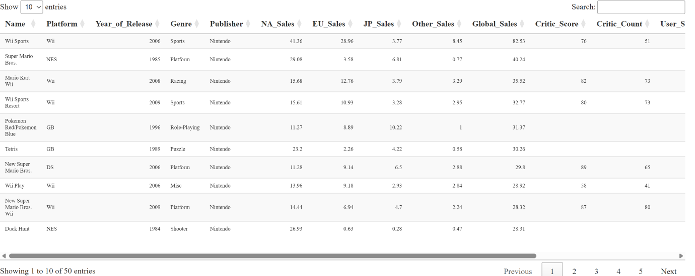
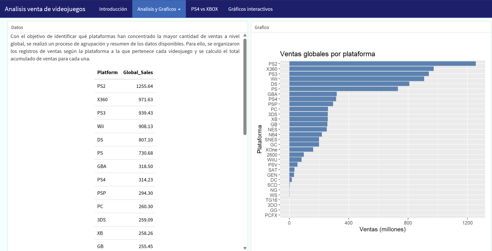
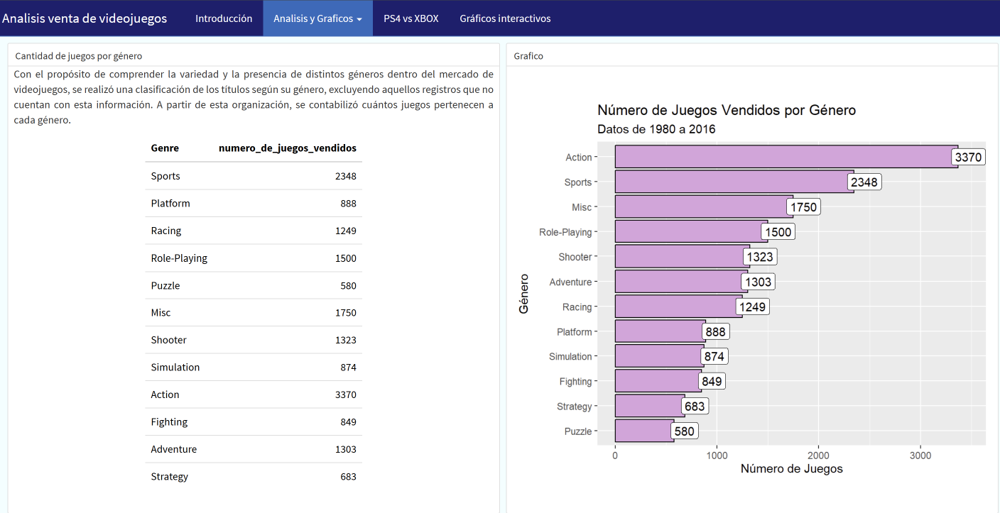
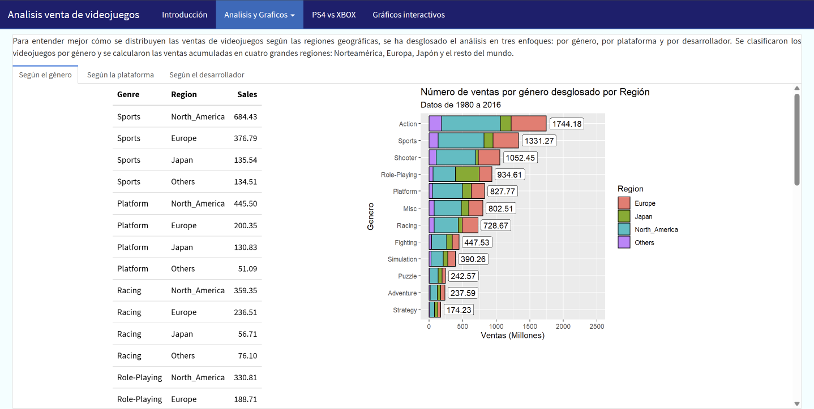
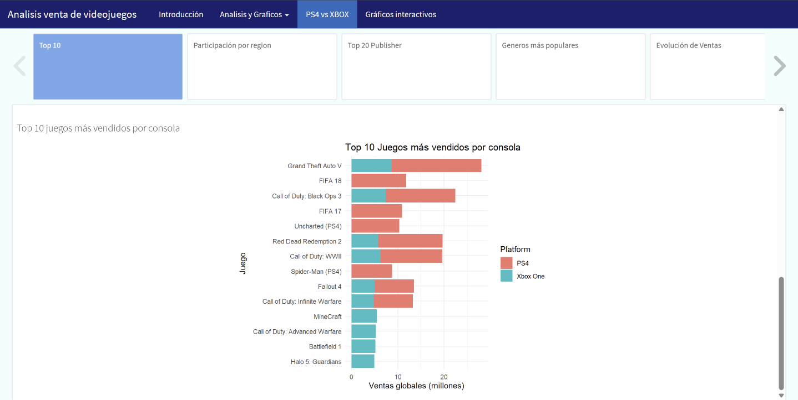
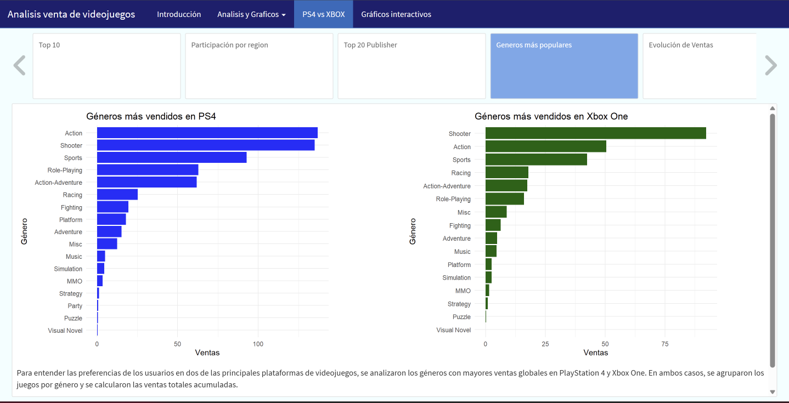
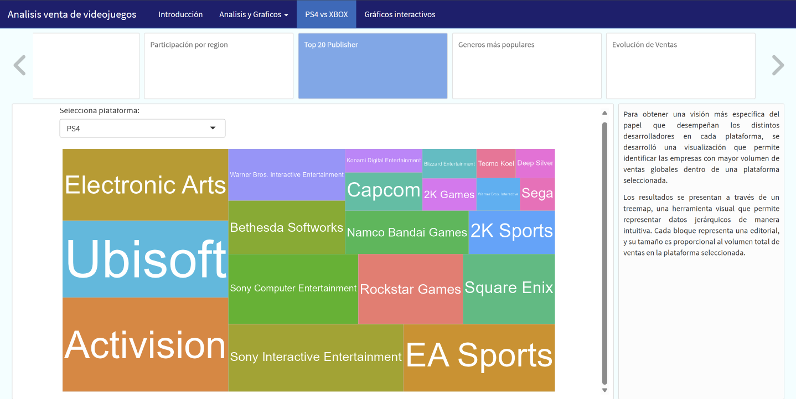
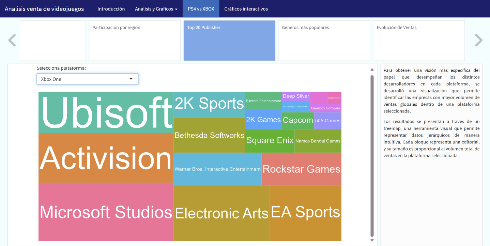
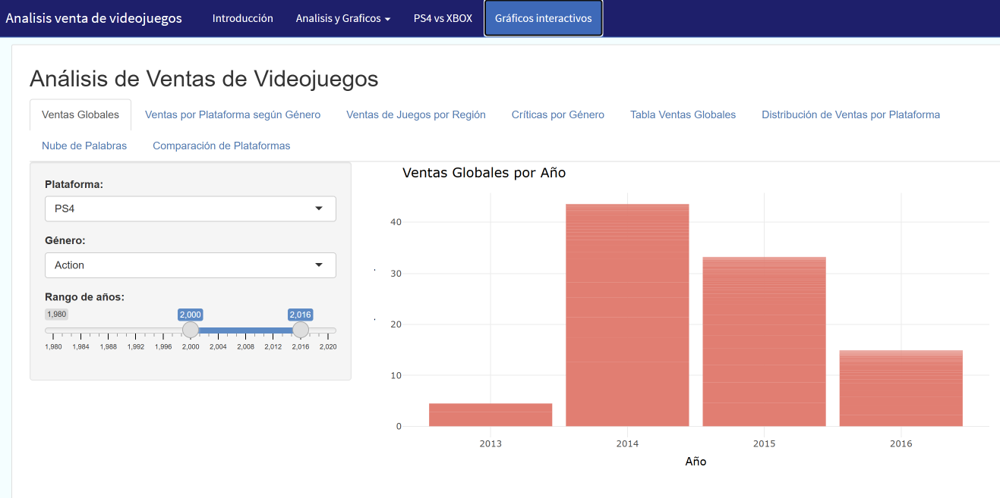
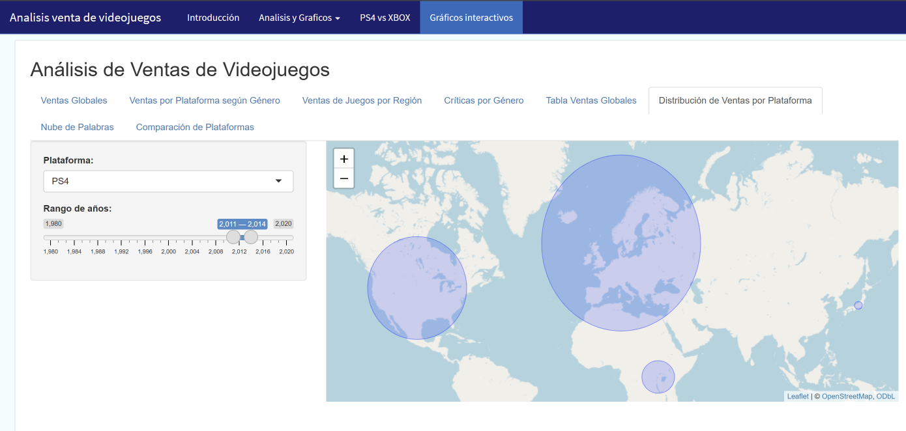

PROYECTO ACADÉMICO · GRADO EN ESTADÍSTICA · UNIVERSIDAD DE SEVILLA
Análisis de ventas de videojuegos
Análisis exploratorio y visualización de datos sobre las ventas de videojuegos mediante R, junto con el desarrollo de un dashboard interactivo para explorar la información.
Descripción del proyecto
Este proyecto consiste en analizar las ventas de videojuegos a partir de diferentes conjuntos de datos que contienen información sobre títulos, plataformas, géneros y regiones geográficas.
El trabajo incluye la importación y preparación inicial de los datos, un análisis exploratorio para estudiar el comportamiento de las ventas y la elaboración de visualizaciones que permiten comparar los resultados desde distintas perspectivas.
Como resultado, se desarrolla un dashboard interactivo que reúne gráficos, tablas y filtros para facilitar la consulta y exploración de la información.
Objetivos
Preparación de datos: importar diferentes conjuntos de datos, especificar los tipos de variables y preparar la información para su análisis.
Análisis exploratorio: estudiar las ventas según plataformas, géneros, años y regiones geográficas.
Visualización: representar la información mediante gráficos y tablas que faciliten su interpretación.
Dashboard interactivo: integrar diferentes visualizaciones en un panel que permita explorar los datos mediante filtros.
Desarrollo del proyecto
1. Preparación e importación de datos
Importación de diferentes conjuntos de datos mediante la función read_csv() de la biblioteca readr, especificando los tipos de variables e identificando los valores ausentes.
Se trabajó con un conjunto general de ventas de videojuegos y otros dos conjuntos específicos de PlayStation 4 y Xbox One. También se prepararon los datos para facilitar su posterior análisis y comparación.

2. Análisis exploratorio de datos
Se analizaron las ventas globales de videojuegos agrupándolas por plataforma, con el objetivo de identificar cuáles concentraban un mayor volumen de ventas a nivel mundial.

El análisis revela un claro liderazgo de PS2 en términos de ventas globales, seguida por Xbox 360, PS3 y Wii. Esta representación facilita la comparación entre plataformas y permite identificar cuáles han concentrado una mayor cuota de mercado dentro del conjunto de datos analizado.
También se estudió la distribución de los videojuegos según su género, contabilizando el número de títulos pertenecientes a cada categoría.

La visualización muestra una clara predominancia de los juegos de acción y deportes, mientras que géneros como Puzzle y Strategy presentan una menor representación. Esto permite comprender cómo se distribuyen los videojuegos entre las distintas categorías del mercado.
Por último, se analizaron las ventas regionales, diferenciando entre Norteamérica, Europa, Japón y el resto del mundo, tanto por género como por plataforma.

El análisis regional revela que Norteamérica y Europa concentran la mayor parte de las ventas en la mayoría de géneros, mientras que Japón presenta patrones de consumo diferenciados en categorías como Role-Playing. Esta comparación permite comprender mejor las preferencias de cada mercado.
3. Comparación entre PlayStation 4 y Xbox One
Se realizó un análisis específico de las ventas de ambas consolas para comparar sus videojuegos más vendidos, la distribución regional de las ventas y los géneros con mayor volumen de ventas en cada plataforma.

El análisis muestra que algunos títulos multiplataforma, como Grand Theft Auto V y Call of Duty, lideran las ventas en ambas consolas. Asimismo, se observan diferencias derivadas de los juegos exclusivos de cada plataforma, lo que permite comprender mejor las preferencias de los usuarios de PS4 y Xbox One.
Además, se estudiaron los géneros con mayores ventas en cada consola para identificar similitudes y diferencias entre ambas plataformas.

El análisis muestra que los géneros Action, Shooter y Sports concentran gran parte de las ventas en ambas consolas. Sin embargo, se observan diferencias en su distribución relativa, lo que refleja preferencias de consumo distintas entre los usuarios de PS4 y Xbox One.
También se incorporó una visualización interactiva de tipo treemap para identificar las editoriales con mayor volumen de ventas dentro de la plataforma seleccionada.


La representación jerárquica muestra cómo se distribuyen las ventas entre las principales editoriales de cada consola. A través del tamaño de los bloques, es posible identificar las compañías con mayor impacto comercial y comparar su influencia relativa en PS4 y Xbox One.
4. Desarrollo del dashboard interactivo
Se desarrolló un dashboard mediante R Markdown, Flexdashboard y Shiny, que reúne diferentes herramientas de análisis y consulta. El panel permite explorar las ventas de videojuegos mediante filtros por plataforma, género y periodo temporal. Incluye gráficos comparativos, análisis de la distribución regional de las ventas y tablas interactivas para consultar los videojuegos y sus resultados según los criterios seleccionados. Además, incorpora funcionalidades complementarias, como una nube de palabras basada en los títulos de los videojuegos.


Resultados
El análisis permitió estudiar las diferencias en las ventas de videojuegos según las plataformas, los géneros y las regiones geográficas, así como comparar el comportamiento comercial de PlayStation 4 y Xbox One.
El dashboard desarrollado reúne diferentes visualizaciones y herramientas de consulta en un único entorno interactivo, facilitando la exploración de los datos y la comparación de resultados mediante filtros y tablas.
Este proyecto permitió aplicar conocimientos de preparación de datos, análisis exploratorio, visualización y programación en R.
Herramientas utilizadas
Para el desarrollo del proyecto se utilizaron diferentes paquetes y herramientas del entorno R:
Fuente de datos
Para realizar el análisis se utilizaron conjuntos de datos de ventas de videojuegos publicados en Kaggle:
- Video Games Sales as at 22 Dec 2016.
- PS4 Games Sales.
- Xbox One Game Sales.